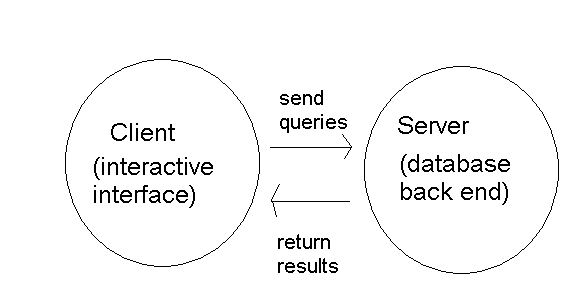
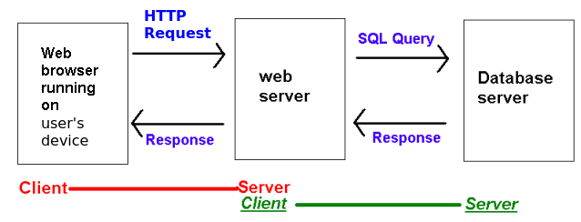
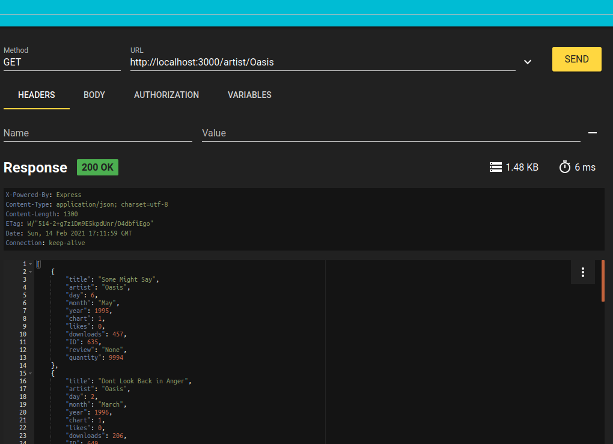
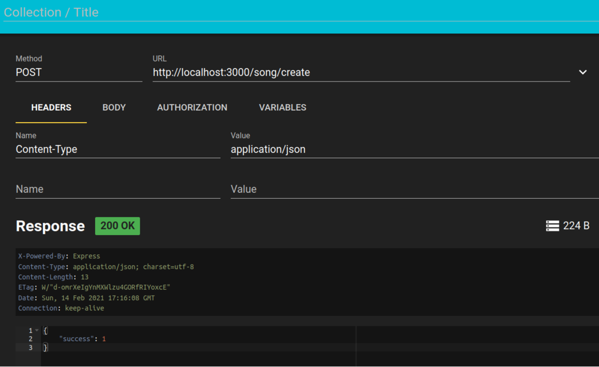
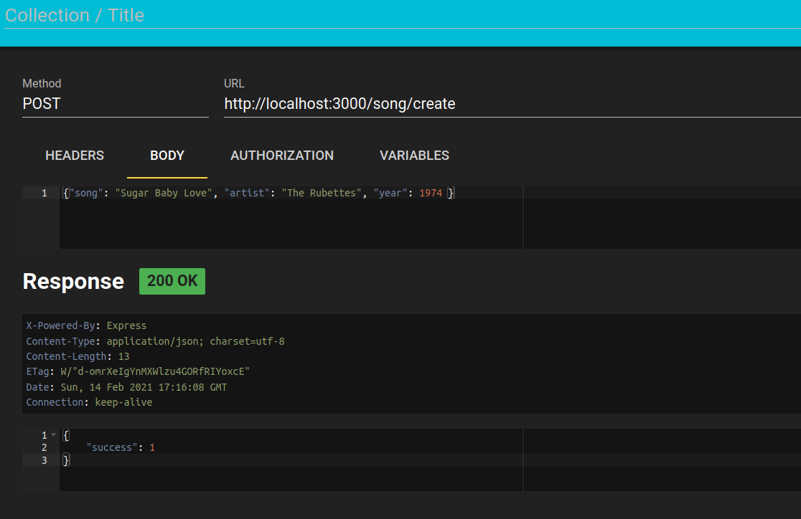
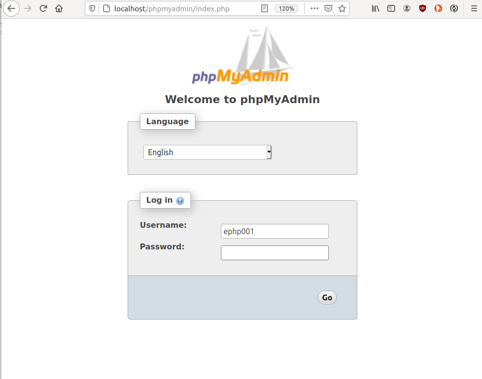
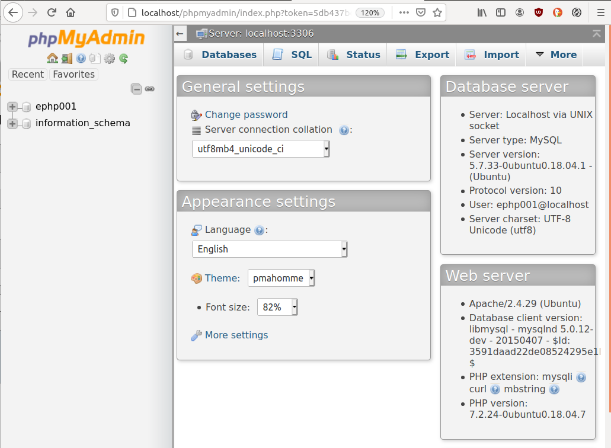
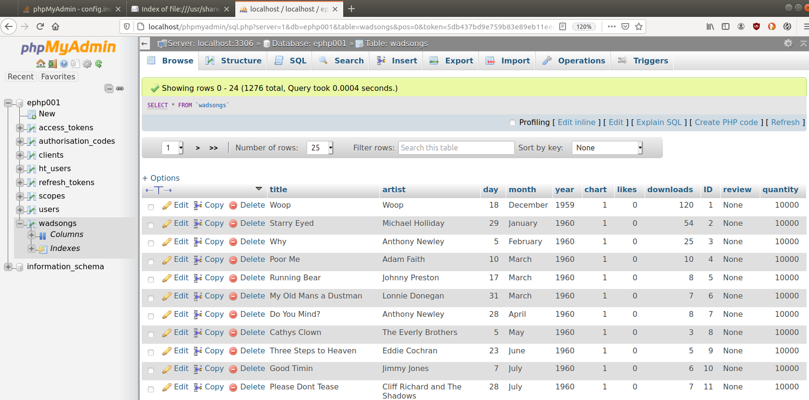

You have already worked with SQL databases in your first year. As you should remember from your databases module, data is stored in tables with columns, and we get data out of the database using queries . These queries are written in Structured Query Language (SQL).
Database systems consist of two components, the server and
the client:

A database server is what we refer to when we informally use the term "database software". It is a continuously-running program which listens to SQL queries from clients, processes them and sends back a response; in this respect, a database server is just like any other server, including a web server.
Examples of database servers include:
Users do not typically interact directly with the database server. Instead, they interact with a database client - a piece of software which communicates with the database server by connecting to it, sending SQL queries, and processing the response. When developing web applications, your software (for example, your Node.js server, or an Apache server running a language such as PHP) would act as the database client. Additionally, a wide range of administration software for database servers is available, allowing developers to control the database via a user-friendly interface. These include:
Database-driven web applications adopt a three-tier architecture. This is because there are three layers: web browser (which the user interacts with), web server (e.g. node.js or Apache/PHP), and database server.
The web server acts as the server with respect to the
user's web browser, but the client with respect to the database server:

The general steps made by a web server application when connecting to a database server are:
To work on this topic you will need to download a database server, either MySQL or MariaDB(which is a fork of MySQL). The easiest way to get set up on Windows or Mac is probably to download XAMPP, which is a package containing an Apache server (which we will look at later), PHP (another server-side scripting language, which you might find interesting to look at in your own time), MariaDB and the database administration tool PHPMyAdmin, which allows you to manage your database through a web-based interface.
If you are on Linux, you can install MySQL or MariaDB via your package management system (apt, rpm etc).
We are going to look now at how you can connect to a MySQL or MariaDB
database from Node.js. As you might guess from last week, there are various
modules available to do the job, including mysql2 (for MySQL) or mariadb for MariaDB. Documentation for these is available at:
mysql2; mysql2 improves upon this. However the documentation for the original mysql module is more extensive, so I have linked it here.mariadb module, which is compatible with mysql and mysql2npm as for last week, e.g. one of:
npm install mysql2 npm install mariadb
All three of these modules can be used in the same way with basic
queries. Here is a simple example with the mysql2 module:
// mysql2 will also work with MariaDB, alternatively use
// const mysql = require('mariadb/callback')
const mysql = require('mysql2');
const con = mysql.createConnection({
host: 'localhost',
user: 'root',
database: 'songsdb'});
con.connect( err=> {
if(err) {
console.log(`Error connecting to mysql: ${err}`);
} else {
console.log('connected to mysql ok');
// now we have a successful connection, query the database..
}
});
Note the callback based approach. Node database APIs use callback-based approaches, as database connection and querying are both operations that might take some time, and we do not want the Node server to become unresponsive, so we specify a callback to run when the appropriate operation (connecting to the database in this example) has completed. The callback here is an arrow function, which takes one parameter err which will contain an error if there was an error connecting, or null otherwise. So we check for the error and if there was no error, we can perform queries. Note that this pattern, with an error as the first parameter of a callback, which contains a non-null value if there was an error, is a common one in Node.js.
How can we connect from an Express application? As seen above, connection to a MySQL database is asynchronous. In an Express application, we probably want to prevent the application starting up if we cannot connect to the database. Therefore, we can set up our routes so that the API endpoints are only handled if a successful connection to the database was made, and if no successful connection was made, quit the Express server. Here is an example:
const express = require('express');
const app = express();
// mysql2 will also work with MariaDB, alternatively use
// const mysql = require('mariadb/callback')
const mysql = require('mysql2');
const con = mysql.createConnection({
host: 'localhost',
user: 'root',
database: 'songsdb'});
con.connect( err=> {
if(err) {
console.log(`Error connecting to mysql: ${err}`);
process.exit(1); // Quit the Express server with an error code of 1
} else {
// Once we have successfully connected to MySQL, we can setup our
// routes, and start the server.
console.log('connected to mysql ok');
// now set up the routes...
app.get('/students/:lastname', (req, res) => {
// ...
});
// listen on port 3000
app.listen(3000);
}
});
It is a very common pattern in web development to develop a web API with a series of endpoints which manipulate the database in various ways, using HTTP methods appropriately for different operations. For example, if we are searching the database with a SELECT query, we use a GET method. If we are updating or inserting data, we use a POST method and if we are deleting data, we use a DELETE method. We can set these methods up in Express easily:
app.get('/endpoint1', ....); // GET request
app.post('/endpoint2', ....); // POST request
app.delete('/endpoint3', ....); // DELETE request
We can also use various HTTP methods from within our Express server
to signal different types of error, e.g.
status() method, eg.:
res.status(404);This pattern, of:
/songs/Oasis to represent all songs by
Oasis);Performing a SELECT statement is as follows. Note how it's callback-based
again: the callback will run when the database sends back the results. The
three arguments to con.query are as follows:
?. This is called a parameterised SQL query and the
question marks are placeholders and will be replaced by
input data, specified in the second argument within an array. This approach avoids a security exploit known as SQL injection which we will cover
later.? placeholder will be
replaced, in order, by an item of input data in the array. In this example
there is only one item in the array, req.params.lastname (the
last name parameter in the route), so the one and only question mark in the
parameterised query will be replaced by this.The code below is a snippet of code showing a
route handler as part of an Express application. It performs an SQL
statement to find all students with the last name matching the
lastname parameter to the Express route, so that for example:
http://localhost:3000/students/Smithwould find all students with the last name Smith.
app.get('/students/:lastname', (req, res) => {
con.query(`SELECT * FROM students WHERE lastname=?`,
[req.params.lastname], (error,results,fields) => {
if(error) {
res.status(500).json({ error: error });
} else {
res.json(results);
}
});
});
Note how we send back JSON to the client, whether there was an
error or the operation was successful. If there was an error, we send
back a JSON object containing an error property with a value of
the error that occurred, and also send back an HTTP status code of 500
(Internal Server Error) which, by convention, is used if the server
encountered an internal error which was not caused by a user mistake.
If, on the other hand, the operation was successful, the callback parameter results will contain the results (as we saw above) and we can convert it straight to JSON and send it back to the client.
Performing an UPDATE statement uses the same approach. Here is a route which could be used to buy a product with a given ID by reducing its quantity in stock by one. Note how this route has a method of POST, following the REST principles discussed above.
app.post('/products/:id/buy', (req, res) => {
con.query('UPDATE products SET quantity=quantity-1 WHERE id=?', [req.params.id], (error,results,fields)=> {
if(error) {
res.status(500).json({error: error});
} else if(results.affectedRows==1) {
res.json({'message': 'Successfully bought.'});
} else {
res.status(404).json({error: 'No rows updated, could not find a record matching that ID'});
}
} );
});
We first test whether there was an error, as for the SELECT example. If there ws no error, we then check the affectedRows property of the results object to determine whether any results were updated. If there were, we send back a JSON success message. If not, the reason will be that there is no product with that ID. By convention, following the principles of REST, if we cannot find what we are looking for in a route, we send back the HTTP status code 404 (Not Found).
DELETE is similar to UPDATE. As we saw above, a route which results in the deletion of data makes use of the HTTP DELETE method.
app.delete('/products/:id', (req, res) => {
con.query('DELETE FROM products WHERE id=?', [req.params.id], (error,results,fields)=> {
if(error) {
res.status(500).json({error: error});
} else if(results.affectedRows==1) {
res.json({'message': 'Successfully deleted.'});
} else {
res.status(404).json({error: 'Could not delete: could not find a record matching that ID'});
}
} );
});
Note how again we check the affectedRows property of the results
to check whether it found the record to delete.
Insertion is discussed below, as there is something else we need to consider first: the nature of POST requests and how to send POST data to the server.
With POST requests, we often need to send data to the server, for example when creating a new product in a products database for a shop, we might need to send the name, manufacturer and price. This is done by embedding the data in the request body, often as JSON, but also as key-value pairs. Last week we considered HTTP requests. Let's see an example of an HTTP POST request with embedded data:
POST /product/create HTTP/1.1
Host: www.solent-e-stores.com
Content-Type: application/json
{"name":"Corn Flakes","manufacturer":"Smith Emporium","price":1.29}
Note how we are sending POST data to /product/create and note how the HTTP request has a Content-Type of application/json (we covered MIME types last week). This is now telling the server (not the client) that what is being sent is JSON.
Note also how the request body begins after the headers, with a gap of one line. Note here, how the request body contains a JSON object containing details of a product.
How can we read the request body from an Express application? We need to
use an Express add-on called body-parser. This should be installed
via npm:
npm install body-parserYou then tell Express to use the
body-parser as follows:
const express = require('express');
const bodyParser = require('body-parser');
const app = express();
app.use(bodyParser.json());
The body-parser is known as middleware: we will return
to this concept later.
Then, when you wish to access the request body in your routes, you use
the req.body object. Here is an example of a
/product/create route which reads JSON from the request body
and performs an SQL INSERT statement with it:
app.post('/product/create', (req, res) => {
con.query('INSERT INTO products(name, manufacturer, price) VALUES (?,?,?)',
[req.body.name, req.body.manufacturer, req.body.price],
(error, results, fields) => {
if(error) {
res.status(500).json({error: error});
} else {
res.json({success: 1});
}
);
});
One question remains. How can you test out these methods? With GET methods, it's simple (we did it last week); you simply request the desired API endpoint in your browser and the appropriate route will be executed. However, with other methods, such as POST and DELETE, it's more difficult, as browsers always send GET requests when you type in a URL.
There are various third-party tools which can be used to test out APIs. A particularly useful one, which those of you on Craig's OODD will have already been introduced to, is RESTer. This is a browser extension which allows you to simulate HTTP requests and is available for Chrome and Firefox. To install RESTer, visit either of these links and follow the instructions, and RESTer will be installed to your browser.
RESTer has an interface as shown below:

Note how RESTer allows you to specify, amongst other things:
http://localhost:3000/artist/Oasis. Note how the response is shown below the controls, showing the status code, the response headers and the response body.
The screenshot below shows how you can add headers to the HTTP request by selecting the Headers tab. Here we have specified the Content-Type as application/json:

You can also add data to the request body. This is shown below, note how we have added JSON describing a song. (Prize to anyone who can guess why I have chosen this particular song...)

RESTer also allows you to test error conditions: if you supply invalid
request data and your web API checks for this, then you will get a non-200
status code returned.
You need to install and use a database client. There are a number of ways in which you can do this:
Also, to populate your database you need a database client, as discussed above. If you download MySQL or MariaDB, either on their own or as part of a package such as XAMPP, you will be able to use the command line tool from your command prompt. This will be either mysql or mariadb.
For example, to launch the MySQL client you would enter, at the command
line:
mysql -u myuser -pand the enter the password. The screenshot below shows this; note that on my system, it requires a password; yours will probably not.
USE command. The example below selects a database called ephp001 however if using the defaults for your database, it's likely to be called mysql.
As a more user-friendly alternative to the console-based client you can
use a graphical interface, such as PHPMyAdmin which comes with XAMPP and can be installed on Linux systems. This is a web-based front-end to a MySQL or MariaDB database, written in the PHP server-side scripting language. Once installed, you should be able to access it via
http://localhost/phpmyadmin/
You will see a login screen like this if you have a database password set up:

If you do not have a password set up, it should take you straight to the main screen:

You can see your database name on the left; by default it may be mysql but in my screenshot it's ephp001. If you expand your database you will see a list of tables:
and then if you select a specific table (wadsongs in my case)
you will see its contents:

If you now click the 'SQL' tab, you will be able to enter SQL commands to send to the database server.
wadsongs table and populate it with around 1000-1500 songs. In PHPMyAdmin, you can use the Import tab to import them:
mysql -u root < wadsongs.sql
public folder (see last week), create a static HTML page containing a field for the artist and a button. When the user clicks a button, some JavaScript on the client should run, to read the artist the user entered in the text field and redirect the user to the web API endpoint for searching by artist. Use window.location to redirect the browser, e.g.
window.location = `http://localhost:3000/.....`; // for you to complete!Once you've done that, add a further two fields (for title an artist) and second button to the static HTML page, and add some further client-side JavaScript to redirect the user to the artist-and-title endpoint. Use Express to serve the static page, as discussed at the end of last week's notes, and access it via
http://localhost:3000/filename.html.